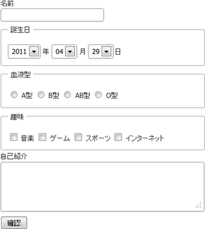
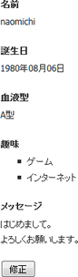

戻る
最終更新日: 2011 年 5 月 3 日
このページでは、Web アプリケーションでよく見かける「登録フォーム」、「確認画面」、「登録完了画面」という 3 ページから構成されるアクションの作成方法を紹介します。チュートリアルを始める前に、前提条件として 初めてのプログラム作成 の内容を理解しておく必要があります。
フォームの作成
まず初めにユーザのデータを登録するためのフォームを作成しましょう。コンソールを立ち上げ、delta コマンドで Form アクションを作成して下さい。
- Shell Code# アクションの作成
cd /var/www/modules/hello
delta --add-action
> Package name [/] (e.g. foo/bar):
> Add action name: Form
> Create action: /var/www/modules/hello/actions/FormAction.php
> Create yaml: /var/www/modules/hello/behaviors/Form.yml
> Create template: /var/www/modules/hello/templates/form.php
Form アクションでは、HTML フォーム上に次の要素を配置します。
| フィールド | フィールドのタイプ | フィールド名 | 項目値 |
|---|---|---|---|
| 名前 | text | nickname | |
| 誕生日 | select | birth[year]、birth[month]、birth[date] | |
| 血液型 | radio | blood | A、B、AB、O |
| 趣味 | checkbox | hobbies | 音楽、ゲーム、スポーツ、インターネット |
| 自己紹介 | textarea | message | |
| 確認ボタン | submit |
フォームの完成イメージは次のようになります。

血液型や趣味に関しては、マスタとなるデータが必要となります。まずはデータを作成しましょう。今回はデータベースを使用しないので、サイト設定ファイルにパラメータを定義します。config/site.yml を開いたら、次のコードを追加して下さい。
- YAML Code# config/site.yml
-
blood:
a: A型
b: B型
ab: AB型
o: O型
hobby:
music: 音楽
game: ゲーム
sports: スポーツ
internet: インターネット
このように、site.yml にはアプリケーションが使用するデータを自由に定義することができます。なお、ここでは誕生日の年・月・日データに関しては定義していません。この理由については後ほど説明します。
Form に関しては今のところアクションを編集する必要はないので、テンプレートファイルを編集します。
- Template Code# modules/hello/templates/form.php
<!DOCTYPE html>
<html lang="ja">
<head>
<meta http-equiv="Content-Language" content="ja" />
<meta http-equiv="Content-Type" content="text/html; charset=UTF-8" />
<meta http-equiv="Content-Style-Type" content="text/css" />
<meta http-equiv="Content-Script-Type" content="text/javascript" />
<title>Form</title>
<link rel="stylesheet" type="text/css" href="/assets/css/base.css" />
</head>
<body>
<h1>Form</h1>
<div id="contents">
<?php echo $form->start('Confirm') ?>
<?php echo $form->inputText('nickname', array('size' => 30), array('label' => '名前')); ?>
<?php echo $form->selectDate(array('fieldPrefix' => 'birth','separator' => array('年', '月', '日')), NULL, array('label' => '誕生日')); ?>
<?php echo $form->inputRadios('blood', $property->get('blood'), NULL, array('label' => '血液型')); ?>
<?php echo $form->inputCheckboxes('hobbies', $property->get('hobby'), NULL, array('label' => '趣味')); ?>
<?php echo $form->textarea('message', array('rows' => 4, 'cols' => 60), array('label' => '自己紹介')); ?>
<p><?php echo $form->inputSubmit('確認') ?></p>
<?php echo $form->close() ?>
</div>
</body>
</html>
コードの中身はひとまず置いておいて、ファイルを保存したらブラウザからアクションを起動してみましょう。リクエストパスは http://{host}/form.do (または http://{host}/hello/form.do) となります。画面上にフォームが表示されたら成功です。
それではテンプレートのコードを見ていきましょう。<body> タグの中を見ると、どこにも宣言していないのに $form という変数が出てきました。$form は名前から想像できる通り、フォームの生成を行うオブジェクトです。例えば $form->start() はフォーム開始タグの生成、$form->inputText() はテキストフィールドを生成してくれます。また、selectDate() は単体メソッドで年、月、日のリストを自動生成してくれる上に、オプション引数を渡すことで表示スタイルをカスタマイズすることもできます。
今回のソースで出てきたメソッドを整理すると下表のようになります。
| メソッド名 | 説明 |
|---|---|
| start() | フォームの開始タグを生成。 |
| inputText() | テキストフィールドを生成。 |
| selectDate() | 年、月、日から構成される日付リストを生成。 |
| inputRadios() | ラジオボタンを生成。 |
| inputCheckboxes() | チェックボックスを生成。 |
| textarea() | テキストエリアを生成。 |
| inputSubmit() | 送信ボタンを生成。 |
| close() | フォームの閉じタグを生成。 |
このように、$form オブジェクトはフォームの生成を手助けする様々なメソッドを提供します。delta ではこのようなオブジェクトのことをテンプレートヘルパと呼んでいます。テンプレートヘルパには $form 以外にも、HTML を作成する HTML ヘルパ ($html)、リクエストデータを取得するリクエストヘルパ ($request) などが提供されています。
詳しくは テンプレートで使用可能なヘルパ を参照して下さい。
HTML で出力されたコードを眺めてみると、$form->start('Confirm') として作成した開始タグは /confirm.do というアクションに遷移させていることが分かります。ここで「確認」ボタンを押すと、Index アクションに遷移してしまいます。これは、Confirm アクションがないために起こる動作です。それでは Form 同様に、Confirm アクションの作成にとりかかりましょう。
登録確認画面の作成
おなじみの delta コマンドで Confirm アクションを作成した後に、アクションクラスを開いて下さい。execute() メソッドに次のコードを記述します。
- PHP Code# modules/hello/actions/ConfirmAction.php
-
class ConfirmAction extends Delta_Action
{
public function execute()
{
$form = $this->getForm();
$view = $this->getView();
$blood = $form->get('blood');
$hobbies = $form->get('hobbies', array());
$site = Delta_Config::getSite();
$view->setAttribute('blood', $site->get('blood'));
$values = array();
foreach ($hobbies as $hobby) {
$values[] = $site->get('hobby')->get($hobby);
}
$view->setAttribute('hobbies', $values);
return Delta_View::SUCCESS;
}
}
ようやく本格的なプログラムコードになってきました。それでは一つずつコードを見ていきましょう。
- PHP Code# modules/hello/actions/ConfirmAction.php
-
$form = $this->getForm();
$blood = $form->get('blood');
$hobbies = $form->get('hobbies', array());
$this->getForm()->get() は、フォームから送信された値を取得するメソッドです。例えば血液型として「A 型」のラベルが送信された場合、$blood に代入される値は「a」となります。同様に、趣味で「ゲーム」と「インターネット」を選択した場合、$hobbies に入る値は array('game', 'internet') となるでしょう。hobbies に関しては get() の第二引数に空の配列を指定していますが、これはチェックボックスが未送信の場合に NULL の代替値として array() を返す処理を施しています。(get() メソッドは引数に指定したフィールドが見つからない場合にデフォルトで NULL を返します)
このように、値が見つからない場合の代替値を指定しておくことで、型の変換エラーを事前に防止することが可能となります。また、ここで登場した $this->getForm() は、テンプレートコードで見た $form 変数とはオブジェクトが異なる点に注意して下さい。getForm() の戻り値は form コンポーネント (Delta_ActionForm) ですが、$form ヘルパの実態は Delta_FormHelper のインスタンスとなっています。
PHP にはクライアントからリクエストされた値を取得するための $_GET や $_POST といったスーパーグローバル変数が提供されていますが、delta を使ったアプリケーションを構築する上ではこれらの変数を使用するべきではありません。中には悪意を持つユーザがプログラムを破壊する目的で不正なコードを送信してくる可能性もあります。delta これらのリクエストデータを安全な形で取得するための各種ラッパーメソッドを提供しています。詳しくは Delta_HttpRequest クラスを参照して下さい。
- PHP Code# modules/hello/actions/ConfirmAction.php
$site = Delta_Config::getSite();
$this->getView()->setAttribute('blood', $site->get('blood')->get($blood));
Delta_Config は、アプリケーションの設定ファイルを読み込むためのローダークラスです。今回は getSite() というメソッドを実行しているので、参照されるファイルは先ほどのサイトファイルになります。Delta_Config::loadXXX() メソッドは YAML データを Delta_ParameterHolder オブジェクトとして返します。
今回は blood の下のキー $blood も指定していることから、$site->get('blood')->get('a') の戻り値は「A 型」となります。ここではラベルに変換された文字列を setAttribute() メソッドを通してテンプレートに割り当てていることが分かります。
setAttribute() メソッドによって割り当てられた変数はテンプレート上で自動的に HTML エスケープの処理が施されます。これは文字列や整数といったスカラー型だけではなく、配列型、オブジェクト型も対象となります。
- PHP Code# modules/hello/actions/ConfirmAction.php
$values = array();
foreach ($hobbies as $hobby) {
$values[] = $property['hobby'][$hobby];
}
$this->getView()->setAttribute('hobbies', $values);
趣味も同様に、送信された値からラベル名を取得します。趣味は複数選択できるため、foreach で全ての値を取得する点に注意して下さい。先ほど get() メソッドで代替値に空の配列を指定しましたが、引数の指定がない場合、趣味が未送信だと $hobbies は NULL となり、foreach() でエラーが発生することになります。全てのラベルを取得した後に、ラベル配列を setAttribute() でテンプレートに渡していますが、この時渡されるデータの形式は array('ゲーム', 'インターネット') のようになります。
これでアクションクラスのコードは終わりです。ここでは血液型と趣味に関して、フォームから送信された値をラベル名に変換し、テンプレートに割り当てるという処理を行いました。続いてテンプレートファイルを編集しましょう。
- Template Code# modules/hello/templates/confirm.php
<!DOCTYPE html>
<html lang="ja">
<head>
<meta http-equiv="Content-Language" content="ja" />
<meta http-equiv="Content-Type" content="text/html; charset=UTF-8" />
<meta http-equiv="Content-Style-Type" content="text/css" />
<meta http-equiv="Content-Script-Type" content="text/javascript" />
<title>Confirm</title>
<link rel="stylesheet" type="text/css" href="/assets/css/base.css" />
</head>
<body>
<h1>Confirm</h1>
<div id="contents">
<?php echo $form->start('Form') ?>
<dl>
<dt>名前</dt>
<dd><?php echo $form->get('nickname') ?></dd>
<dt>誕生日</dt>
<dd><?php echo $form->get('birth.year') ?>年<?php echo $form->get('birth.month') ?>月<?php echo $form->get('birth.day') ?>日 </dd>
<dt>血液型</dt>
<dd><?php echo $blood ?></dd>
<dt>趣味</dt>
<dd><?php echo $html->ul($hobbies) ?></dd>
<dt>メッセージ</dt>
<dd><?php echo nl2br($form->get('message')) ?></dd>
</dl>
<?php echo $form->requestDataToInputHiddens() ?>
<?php echo $form->inputSubmit('修正') ?>
<?php echo $form->close() ?>
</div>
</body>
</html>
名前や誕生日は、$form->get() メソッドを使って送信された値を表示しています。$form->get() メソッドで取得される値は自動的に HTML エスケープの処理が行われるので、開発者自らが htmlentities() などの関数を使って XSS 対策を行う必要はありません。また誕生日に関しては、"birth.year"、"birth.month" という記述を用いてますが、これは連想配列の形式で送信された誕生日 (birth[year]、birth[month]、birth[day]) を取得する記述方法です。delta では連想配列形式のフィールド名をピリオド区切りの名前で取得することができます。
また血液型や趣味に関しては、先ほどアクションでラベル名に変換した値を表示しています。 趣味の項目で使用している $html->ul() メソッドは、引数に指定した配列を HTML のリスト構造に変換してくれます。今回のように、複数の項目をリスト形式で表示したい場合に役立つでしょう。
最後に $form->requestDataToInputHiddens() というメソッドに注目して下さい。このメソッドは、フォームから送信されたデータを元に hidden フィールドを生成します。これは入力項目を持たない入力確認画面などで、次のページ (登録処理アクション) に値を引き継がせたい場合に使用します。
- HTML Code# requestDataToInputHiddens() メソッドが出力する値
<input type="hidden" name="nickname" value="test" id="nickname" />
<input type="hidden" name="birth[year]" value="1980" id="birth_year" />
<input type="hidden" name="birth[month]" value="08" id="birth_month" />
<input type="hidden" name="birth[day]" value="6" id="birth_day" />
<input type="hidden" name="blood" value="a" id="blood" />
<input type="hidden" name="hobbies[0]" value="game" id="hobbies_0" />
<input type="hidden" name="hobbies[1]" value="internet" id="hobbies_1" />
<input type="hidden" name="_hobbies" value="on" id="hobbies" />
<input type="hidden" name="message" value="test" id="message" />
以上でテンプレートの編集は終わりです。お疲れさまでした。それではブラウザを立ち上げてプログラムの動作確認を行ってみましょう。フォームで入力した値が確認画面で表示されたら成功です。

更に画面下部に用意された「修正」ボタンを押してみましょう。1 つ手前の入力フォームに戻りますが、先ほど入力した値が各フィールドに自動的にセットされていることが分かります。この時 Form ヘルパは、リクエストされたデータを解析し、フィールド名とマッチするリクエストデータがあれば自動的に送信された値をフィールドの初期値に設定します。つまり、開発者がフィールドごとに初期値の設定する必要はないのです。
このように、フォームを作成する上で定型となる面倒な作業は全てヘルパが吸収してくれます。開発者や HTML コーダは、フレームワークが提供するヘルパを使いこなすことで、テンプレートの作成や修正にかかる時間を短縮することが可能となるでしょう。
登録完了画面の作成
最後は登録完了画面の作成です。先ほど作成した確認画面に「登録」ボタンを追加しますが、HTML の性質上フォームには 1 つのアクションしか指定することができません。通常、ボタンごとに応じた動作を起こすには JavaScript 等のスクリプトを使う必要がありますが、delta では実行するアクションを選択するためのディスパッチャというアクションを挟むことで、ボタンに応じたアクションの切り替えを可能としています。
初めにフォームの遷移先をディスパッチを行うアクション名に書き換えます。ここでは Dispatcher としました。
- Template Code# modules/hello/templates/confirm.php
<!-- 古いコード -->
<?php echo $form->start('Form') ?>
<!-- 新しいコード -->
<?php echo $form->start('Dispatcher') ?>
次に「登録」ボタンを追加します。ここで先ほど無かった第 2 引数に注目して下さい。inputSubmit() メソッドの第 2 引数には、HTML タグに変換した際に付加する属性を設定できます。name はフォームの要素名を表す属性ですが、それぞれ dispatch という接頭辞が付いてます。これはディスパッチャを使う際の決まり事だと捉えて下さい。もし他のボタンが追加された場合も、要素の名前は dispatchXXX という形式になります。
- Template Code# modules/hello/templates/confirm.php
<?php echo $form->inputSubmit('修正', array('name' => 'dispatchForm')) ?>
<?php echo $form->inputSubmit('登録', array('name' => 'dispatchRegister')) ?>
これで確認画面のテンプレート編集は終わりです。今度は Dispatcher アクションを作成しましょう。
- PHP Code# modules/hello/actions/DispacherAction
-
class DispatcherAction extends Delta_DispatchAction
{
public function dispatchForm()
{
return 'Form';
}
public function dispatchRegister()
{
return 'Register';
}
public function defaultForward()
{
return 'Confirm';
}
}
ファイルを開いたら、Delta_Action となっている親クラスの名前を Delta_DispatchAction に書き換えます。Delta_DispatchAction は、フォームから送信されたボタンに従って実行するアクションを確定させる抽象クラスです。実体は Delta_Action の子クラスですが、execute() メソッドは使用せず、代わりに dispatchForm()、dispatchRegister() といったメソッドが定義されています。
勘の良い方は気づいたかもしれませんが、Dispatcher アクションに定義されたメソッド名はそのまま確認画面のボタンの名に合致しています。つまり、修正ボタンを押したら dispatchForm()、登録ボタンが押されたら dispatchRegister() メソッドが実行されるという仕組みです。メソッドの戻り値はそのままフォワード (遷移) するアクション名になります。
defaultForward() メソッドは、送信されたボタンが不明な場合に起動するデフォルトフォワードメソッドであり、Delta_DispatchAction クラスに定義されています。送信ボタン押下時のリクエストパスは /hello/dispatcher.do のようになりますが、URI をブラウザに直に入力した場合、ボタンが押されていない状態となるため、defaultForward() メソッドが起動します。
最後に登録完了画面を作成します。アクション名は Register として下さい。
- PHP Code# modules/hello/actions/DispacherAction
-
class RegisterAction extends Delta_Action
{
public function execute()
{
$this->getMessages()->add('登録完了しました。');
return Delta_View::SUCCESS;
}
}
$this->getMessages() はクライアントに通知するメッセージを扱ったコンポーネントです。ここでは「登録完了しました。」というメッセージを add() メソッドで登録しています。メッセージには成功通知以外にも、ビジネスロジックで発生するエラーメッセージ、フォームのフィールドに対するバリデートエラーメッセージがあります。
アクションを書き換えたところでテンプレートを編集しましょう。
- Template Code# modules/hello/templates/register.php
<!DOCTYPE html>
<html lang="ja">
<head>
<meta http-equiv="Content-Language" content="ja" />
<meta http-equiv="Content-Type" content="text/html; charset=UTF-8" />
<meta http-equiv="Content-Style-Type" content="text/css" />
<meta http-equiv="Content-Script-Type" content="text/javascript" />
<title>Register</title>
<link rel="stylesheet" type="text/css" href="/assets/css/base.css" />
</head>
<body>
<h1>Register</h1>
<div id="contents">
<?php echo $html->messages() ?>
</div>
</body>
</html>
$html->messages() メソッドは、メッセージコンポーネントに格納されたメッセージをリスト形式で出力するヘルパです。ファイルを保存したらアプリケーションを立ち上げてみて下さい。確認画面から完了画面に遷移できましたか? プログラムが正しく動作していれば、先ほどアクションで設定したメッセージが表示される筈です。
ここでテンプレートに直にメッセージを書かなかったのには理由があります。今回はごく簡単なコードでしたが、実際に稼働するアプリケーションとなると、ビジネスロジックでエラーが発生したり、成功通知メッセージも条件によって変化することがあります。このような場合、出力メッセージをテンプレート上で切り替えていたのでは大変です。メッセージコンポーネントを使えばメッセージを外部ファイルで一元管理することもできますし、何よりヘルパを使って統一的なインタフェースでメッセージ管理が可能となります。アプリケーションを構築する上では、フレームワークが提供するコンポーネントをうまく使いこなすことがポイントとなるでしょう。